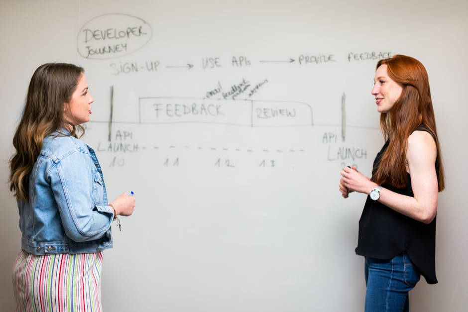

A deep dive into Atlassian's flagship product for issue tracking and project management, specifically tailored for software teams. Is it the right fit for your workflow?
By Upingi Team / Published on July 22, 2024
What is Jira Software?
Jira Software, developed by Atlassian, is a leading project management and issue tracking tool primarily designed for software development teams practicing Agile methodologies (like Scrum and Kanban). It provides a central platform for planning sprints, tracking bugs and issues, managing releases, and reporting on team performance. Jira allows teams to define custom workflows that mirror their development processes, from backlog grooming and sprint planning to coding, testing, and deployment. Its core strength lies in its deep integration with developer tools (like Bitbucket, GitHub, GitLab) and its robust features for tracking detailed information about software issues, including status, priority, assignee, versions affected, and linked code commits or pull requests. While highly powerful for software teams, Jira's complexity can make it less suitable for non-technical project management compared to tools like Trello or Asana.
Key Features

- Scrum & Kanban Boards: Flexible boards optimized for Agile frameworks. Scrum boards facilitate sprint planning, backlog management, and burndown charts. Kanban boards offer visual workflow management with WIP (Work In Progress) limits.
- Customizable Workflows: Design workflows that match your team's specific processes. Define issue statuses (e.g., Open, In Progress, In Review, Done) and transitions between them, including conditions, validators, and post-functions for automation.
- Issue Tracking: Create and track various issue types (Bug, Story, Task, Epic). Utilize custom fields, priorities, labels, components, versions, and linking to capture detailed information and relationships between issues.
- Backlog Management: Dedicated backlog view for grooming, prioritizing, and estimating user stories or tasks before planning them into sprints or iterations.
- Roadmaps: Plan and visualize project timelines and initiatives. Basic roadmaps are available on lower tiers, while Advanced Roadmaps (Premium/Enterprise) offer cross-project planning, dependency mapping, and capacity management.
- Reporting & Dashboards: Generate a wide range of Agile reports (Burndown, Burnup, Velocity, Cumulative Flow Diagram, Sprint Report). Create customizable dashboards with various gadgets to monitor progress and team performance.
- Developer Tool Integrations: Seamless integration with Bitbucket, GitHub, GitLab, Jenkins, and other CI/CD tools. Link code commits, branches, and pull requests directly to Jira issues for traceability.
- Automation: Automate repetitive tasks across Jira and integrated tools using a powerful rule builder (similar to Asana Rules or Trello Butler).
- Extensibility (Marketplace): Access thousands of apps on the Atlassian Marketplace to extend Jira's functionality with integrations, additional reporting, time tracking, testing tools, and more.
User Interface and Ease of Use
Jira's interface is feature-rich and highly configurable, which contributes to a steeper learning curve compared to simpler tools. While Atlassian has made strides in improving usability, navigating the numerous menus, settings, and configuration options can be daunting for new users or non-administrators. The core board and issue views are relatively straightforward, but setting up projects, workflows, and custom fields requires understanding Jira concepts. It's powerful but often requires dedicated administration and user training for teams to leverage its full potential effectively.
Pricing Tiers
Jira Software offers several tiers: **Free** (up to 10 users, basic features, limited storage/automation), **Standard** (up to 35,000 users, adds project roles, permissions, audit logs, more storage/automation), **Premium** (adds Advanced Roadmaps, guaranteed uptime SLA, unlimited storage, advanced automation, IP allowlisting), and **Enterprise** (adds centralized user billing, Atlassian Access/SSO included, enterprise support). Pricing is per user per month (with volume discounts) and varies significantly between Standard, Premium, and Enterprise, especially for larger teams.
Conclusion & Final Rating
Jira Software remains the dominant force in issue tracking and project management for Agile software teams for good reason. Its depth of features, customizability, and tight integration with the development lifecycle are unmatched by most competitors. For teams practicing Scrum or Kanban and needing granular control over their workflows and issue tracking, Jira provides immense power. However, this power comes at the cost of complexity and a significant learning curve. It's often not the best choice for non-software teams or those seeking a simple, lightweight task manager. If your team lives and breathes Agile development, Jira is likely the gold standard, but be prepared to invest time in setup and training.